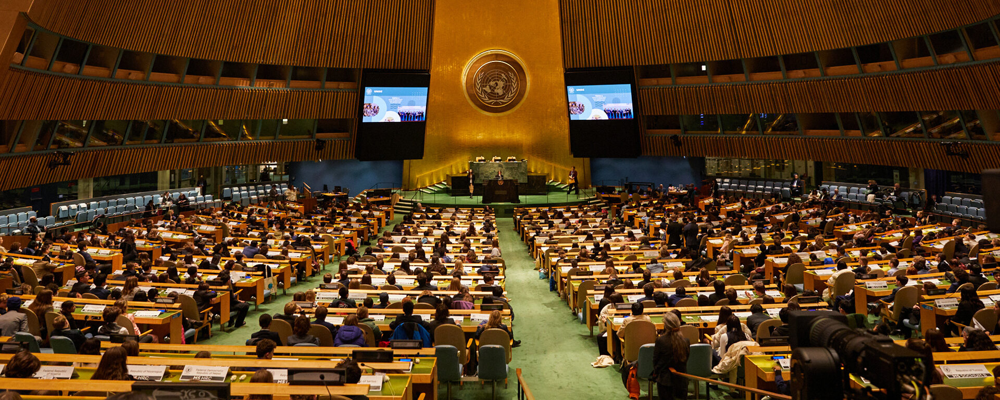

MUN Secretary General & High School (2023 - 2024)
Leadership and coordination of international debate events.
Development of public speaking, conflict resolution, and team management skills prior to my immersion in the technology sector.

Data Analyst (2025)
During my year of experience as a Data Analyst, I focused on transforming raw data into actionable insights.
I utilized tools like SQL and Python to optimize decision-making processes, building a logical foundation that I now apply to systems architecture.
ASIR - Madrid (2026)
Currently studying Administration of Networked Computer Systems (ASIR) in Madrid.
Specializing in network infrastructure and Linux server administration, with the goal of pursuing a degree in Computer Engineering at the Polytechnic University of Madrid.
Future Outlook (2027 - 2028)
After completing my ASIR studies, my objective is to advance into Computer Engineering.
My goal is to combine my practical experience in data analysis and network administration with advanced software engineering principles.